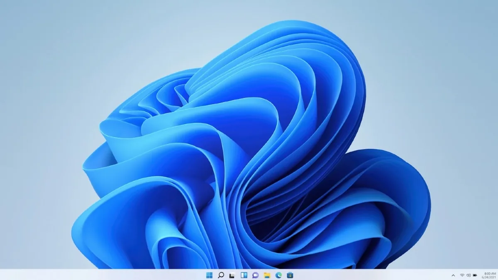
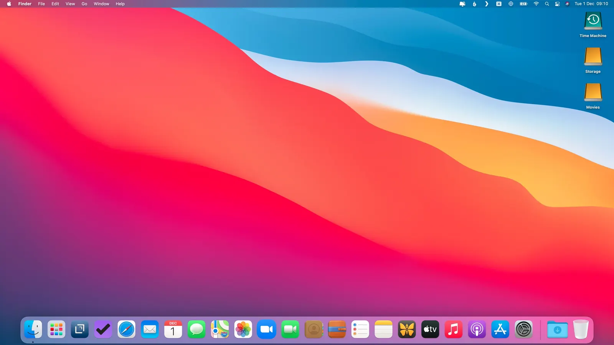
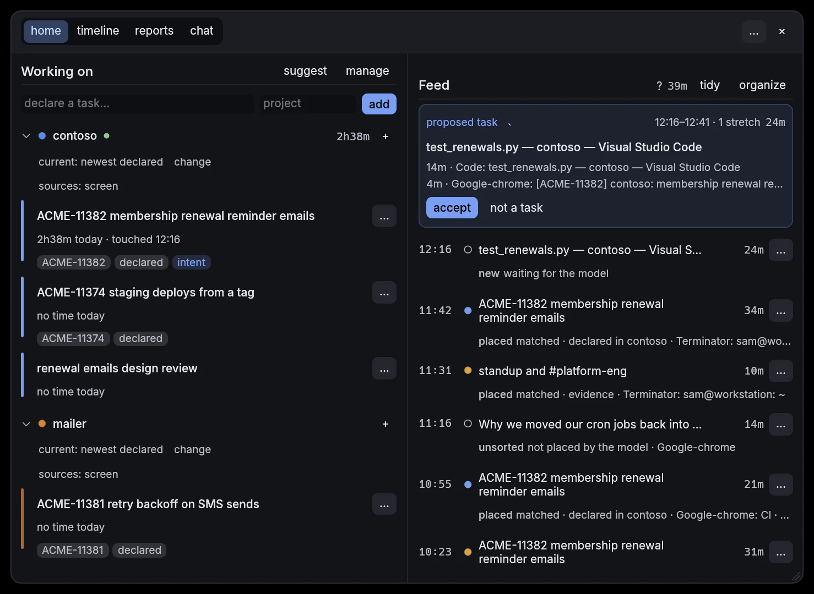
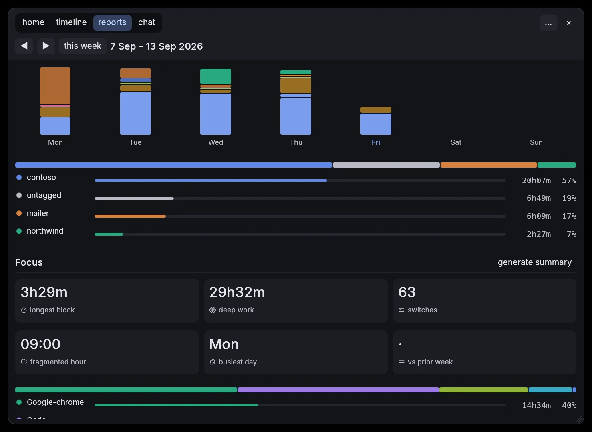
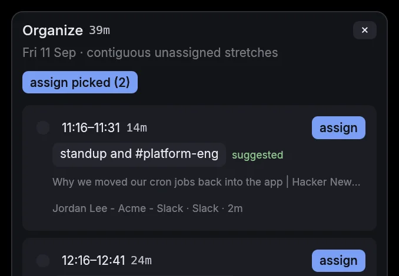

Your day,
written down.
A small window in the corner of your screen that knows what you worked on, for how long, and why. Nothing leaves your machine.
- no account
- no server
- no telemetry
- no cloud model
- no screenshots
- no keylogging



- LAUNCH-241 landing page copy
- Q3 launch brief
- calls
- loose time
7h38m focused · 45m loose · 40m away · 12 switches. One Thursday, sorted while it was still happening. Hover a block.
The day, as it happened.
Every stretch of focus lands in the feed the moment it ends, with the task it belongs to and the reason. Drag the window out and the day runs in lanes, with any task open beside it.

The week, added up.
Deep work, longest block, switches, the hour that fragments, and how it compares with last week. Every task grouped by project with its share of the hours. Nothing to fill in.


Ask your own history.
What was I doing Tuesday before the call? How much of this month went to the launch? Ask in plain words, get an answer with times attached.
The model runs inside the app, on your CPU: 2.4 GB on disk, downloaded once. It reads the rows for the time you asked about and nothing else.
Sees more, if you let it.
The window title is the whole record until you flip a switch. Each source says what it reads, and nothing talks to a server unless you turned it on.

How it works
A morning, from the first window to the standup line. Seven steps, and the same morning's data at each one.
-
Sees
A small background process notices which window is in front and when you step away. It keeps the name of the app and the title of the window: the document, the sheet, the tab, the call. That is the whole record. No keystrokes, no screenshots, no clipboard.
Where it can, it also picks up the things that say what the work was: a call starting, a meeting on the calendar, the branch or folder in a terminal title, a ticket number in a tab, a commit landing in a repo you listed.
09:02:14 focus Chrome Q3 launch brief – Google Docs 09:31:40 focus Slack #launch-planning 09:40:05 focus Zoom Launch sync 09:40:00 meeting Launch sync · calendar · 09:40–10:15 09:40:11 call microphone on 10:12:22 focus Chrome LAUNCH-241 Landing page copy – Jira 10:40:10 focus Figma Landing page v2 -
Groups
Raw focus events are noisy, so they get folded into spans. A title that changes but stays mostly the same is one span. Anything shorter than five seconds is counted as switching, not work. Ten minutes of work and then five minutes away closes the batch; half an hour away closes it whatever happened.
span 09:02–09:31 Chrome Q3 launch brief – Google Docs span 09:31–09:40 Slack #launch-planning span 09:40–10:12 Zoom Launch sync · on a call span 10:12–10:40 Chrome LAUNCH-241 Landing page copy – Jira span 10:40–11:15 Figma Landing page v2 batch 09:02–11:15 5 spans · 32m on a call · 4 switches closed at 11:20 · away 5m -
Recognises
Before any model runs, a few plain rules take a first pass every minute, in a fixed order. A branch name that carries a ticket key. A ticket key in a tab or its address. The project folder a file is in, if that task was touched in the last two hours. A window that looks like one you filed before. A match is written down as provisional, with the rule that placed it, so the feed and the timeline fill in while you are still working.
Every five minutes the model also looks at the stretch still open and places it at a discount, until the batch closes and the full pass replaces both.
rules 09:02–09:31 → Q3 launch brief reason: past correction "Chrome · Q3 launch brief" → Q3 launch brief confidence 0.50 to confirm 10:12–10:40 → LAUNCH-241 landing page copy reason: title LAUNCH-241 confidence 0.50 to confirm 09:31–10:12 no rule matched · waiting for the model -
Thinks
When a batch closes, it is turned into a short digest: apps by time, sites visited, calls and other activity, the ticket keys that were on screen, a minute-by-minute line of what was in front, and the tasks already open, numbered. If a ticket tracker is connected, the ticket's summary goes in too. A language model running inside the app reads the digest and answers with blocks, each linked to an open task by its number or given a new name, with a start and end in minutes. The answer has to fit a fixed shape, at most eight blocks, so it cannot wander. Neighbouring blocks for one task are merged before they are stored, and they replace the provisional rows.
On a laptop CPU a batch takes about two minutes. The part of the prompt that does not change between batches stays in the model's cache, so reading the next one takes about half as long.
digest apps Chrome 57m · Figma 35m · Zoom 32m · Slack 9m call 09:40–10:12 · meeting Launch sync keys LAUNCH-241 · 28 min on screen open 1 Q3 launch brief 2 LAUNCH-241 landing page copy context LAUNCH-241 (Jira): rewrite the hero and the pricing row for the Q3 launch model {"ref": 1, "label": null, "project": null, "start": 0, "end": 29, "confidence": 0.9} {"ref": null, "label": "launch sync", "project": "Q3 launch", "start": 29, "end": 70, "confidence": 0.85} {"ref": 2, "label": null, "project": null, "start": 70, "end": 133, "confidence": 0.9} stored 3 blocks · replaces 2 provisional rows -
Learns
It will be wrong sometimes. When you rename, move or throw out a block, the correction is stored with the context it was made in: the app and the window title. The next pass reads those first. Throwing a block out of a task is remembered as a hard no, so the same guess is not made again. Loose time gets folded into runs you can file in one go, with the task pre-filled from what you did last time.
Once a day, at the first quiet moment after two in the afternoon or at six, slivers under three minutes with no project or ticket of their own that sit between two blocks of the same task fold into it. One tidy a day, and one undo.

Organize: unassigned time, one run at a time, task pre-filled. -
Writes
The standup draft, the timeline, the task cards, the reports and the chat all read the same table. Nothing is worked out twice and nothing is stored anywhere else.
standup Yesterday: landing page copy and the launch brief (LAUNCH-241, 2h13m) · launch sync (32m) timeline 09:02 ──────────────── 11:15 Q3 launch report Q3 launch · LAUNCH-241 · 2.2 h chat "what did I do before the launch sync?" → same rows -
Shows its work
Settings keeps the pipeline in view: which model file is loaded, whether the worker is running or idle, how many batches are waiting, the last batch with its time and token counts, and the last live pass. Two buttons show the exact digest the model read and the exact answer it gave. If a block is in the wrong place, you can see why.

Settings › Derivation: the worker, the last batch, the digest and the answer.